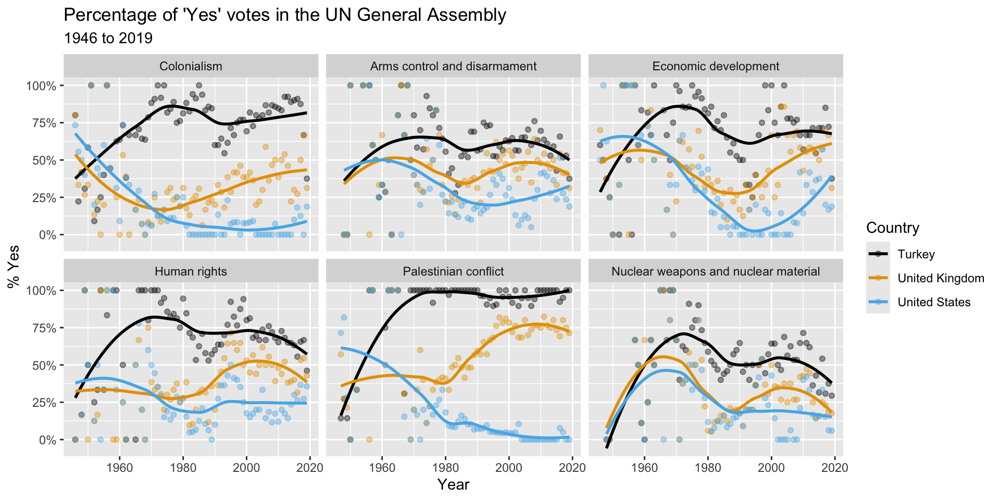

ggplot(mtcars, _[blank]_(x = wt, y = mpg)) +
geom_point() +
geom_smooth()Grammar of data transformation
Lecture 4
Warm-up
While you wait: Participate üì±üíª
Which of the following is true about the code below?
mtcarsis the name of the variable being plotted on the x-axis- The function that goes in the blank is
map() - The data are being visualized with a scatterplot and a smooth line
- Some points on the plot will be colored differently than others

Scan the QR code or go to app.wooclap.com/sta199. Log in with your Duke NetID.
Announcements
Continue to respond to Wooclap questions during class and remember that attendance and participation are part of your grade – if we haven’t gotten any responses from you yet, and you didn’t just add the class, you’ve already heard from us!
Lab 1 is on Monday, HW 1 is due next Sunday.
From last time
Bechdel test
The Bechdel test (or the Bechdel-Wallace test), named after cartoonist Alison Bechdel,
is a measure of the representation of women in film and other fiction. The test asks whether a work features at least two women who have a conversation about something other than a man. Some versions of the test also require that those two women have names.

Source: Wikipedia
The origin of the Bechdel test

Dykes to Watch Out For - 1985
Film passes if…
- two female characters;
- talk to each other;
- about something besides a man.
How did some of my favorite movies do?
- The Big Lebowski ❌
- In the Mood for Love ✅
- Trainspotting ❌
- Love Actually ✅
- Eternal Sunshine of the Spotless Mind ❌
- Before Sunrise ❌
- When Harry Met Sally ✅
- Garden State ✅
- Empire Records ✅
- Amélie ✅
Data story

We did a statistical analysis of films to test two claims: first, that films that pass the Bechdel test — featuring women in stronger roles — see a lower return on investment, and second, that they see lower gross profits. We found no evidence to support either claim.
Source: The Dollar-And-Cents Case Against Hollywood’s Exclusion of Women, by Walt Hickey, FiveThirtyEight, April 1, 2014.
ae-02-bechdel-dataviz
- Go to your
aeproject in RStudio. - Make sure all of your changes up to this point are committed and pushed, i.e., there’s nothing left in your Git pane.
- If you haven’t done so during the last class, click Pull to get today’s application exercise file.
- Work through the application exercise in class, and render, commit, and push your edits by the end of class.
Recap
- Construct plots with
ggplot(). - Layers of ggplots are separated by
+s. - The formula is (almost) always as follows:
ggplot(DATA, aes(x = X-VAR, y = Y-VAR, ...)) +
geom_XXX()Recap: Code cells (aka code chunks)

Cell
labels are helpful for describing what the code is doing, for jumping between code cells in the editor, and for troubleshootingmessage: falsehides any messages emitted by the code in your rendered document
Data transformation
A quick reminder
- 1
-
Start with the
bechdeldata frame - 2
-
Filter for movies with
roigreater than 400 (gross is more than 400 times budget) - 3
-
Select the columns
title,roi,budget_2013,gross_2013,year, andclean_test
# A tibble: 3 × 6
title roi budget_2013 gross_2013 year clean_test
<chr> <dbl> <dbl> <dbl> <dbl> <chr>
1 Paranormal Activity 671. 505595 339424558 2007 dubious
2 The Blair Witch Proje… 648. 839077 543776715 1999 ok
3 El Mariachi 583. 11622 6778946 1992 nowomen Participate üì±üíª
In data transformation with the pipe operator |>, what does the operator do?
- It ends a pipeline and prints the result.
- It joins two data frames together.
- It passes the output from the previous command into the first argument of the function in the next command.
- It is equivalent to the “or” operator.
Scan the QR code or go to app.wooclap.com/sta199. Log in with your Duke NetID.
The pipe |>
The pipe operator passes what comes before it into the function that comes after it as the first argument in that function.
sum(1, 2)[1] 31 |>
sum(2)[1] 3select(filter(bechdel, roi > 400), title)# A tibble: 3 × 1
title
<chr>
1 Paranormal Activity
2 The Blair Witch Project
3 El Mariachi bechdel |>
filter(roi > 400) |>
select(title)# A tibble: 3 × 1
title
<chr>
1 Paranormal Activity
2 The Blair Witch Project
3 El Mariachi Code style tip
- In data transformation pipelines, always use a
- space before
|> - line break after
|> - indent the next line of code
- space before
. . .
- In data visualization layers, always use a
- space before
+ - line break after
+ - indent the next line of code
- space before
The pipe, in action
Find movies that pass the Bechdel test and display their titles and ROIs in descending order of ROI.
. . .
Start with the bechdel data frame:
bechdel# A tibble: 1,615 × 7
title year gross_2013 budget_2013 roi binary clean_test
<chr> <dbl> <dbl> <dbl> <dbl> <chr> <chr>
1 21 & Over 2013 67878146 13000000 5.22 FAIL notalk
2 Dredd 3D 2012 55078343 45658735 1.21 PASS ok
3 12 Years a S… 2013 211714070 20000000 10.6 FAIL notalk
4 2 Guns 2013 208105475 61000000 3.41 FAIL notalk
5 42 2013 190040426 40000000 4.75 FAIL men
6 47 Ronin 2013 184166317 225000000 0.819 FAIL men
7 A Good Day t… 2013 371598396 92000000 4.04 FAIL notalk
8 About Time 2013 102648667 12000000 8.55 PASS ok
9 Admission 2013 36014634 13000000 2.77 PASS ok
10 After Earth 2013 304895295 130000000 2.35 FAIL notalk
# ℹ 1,605 more rowsThe pipe, in action
Find movies that pass the Bechdel test and display their titles and ROIs in descending order of ROI.
Filter for rows where binary is equal to "PASS":
bechdel |>
filter(binary == "PASS")# A tibble: 753 × 7
title year gross_2013 budget_2013 roi binary clean_test
<chr> <dbl> <dbl> <dbl> <dbl> <chr> <chr>
1 Dredd 3D 2012 55078343 45658735 1.21 PASS ok
2 About Time 2013 102648667 12000000 8.55 PASS ok
3 Admission 2013 36014634 13000000 2.77 PASS ok
4 American Hust… 2013 397915817 40000000 9.95 PASS ok
5 August: Osage… 2013 87609748 25000000 3.50 PASS ok
6 Beautiful Cre… 2013 75392809 50000000 1.51 PASS ok
7 Blue Jasmine 2013 101793664 18000000 5.66 PASS ok
8 Carrie 2013 120268278 30000000 4.01 PASS ok
9 Despicable Me… 2013 1338831390 76000000 17.6 PASS ok
10 Elysium 2013 379242208 120000000 3.16 PASS ok
# ℹ 743 more rowsThe pipe, in action
Find movies that pass the Bechdel test and display their titles and ROIs in descending order of ROI.
Arrange the rows in descending order of roi:
bechdel |>
filter(binary == "PASS") |>
arrange(desc(roi))# A tibble: 753 × 7
title year gross_2013 budget_2013 roi binary clean_test
<chr> <dbl> <dbl> <dbl> <dbl> <chr> <chr>
1 The Blair Wit… 1999 543776715 839077 648. PASS ok
2 The Devil Ins… 2012 157289709 1014639 155. PASS ok
3 My Big Fat Gr… 2002 768922942 6475896 119. PASS ok
4 Chasing Amy 1997 39417963 362810 109. PASS ok
5 Slacker 1991 4200140 39349 107. PASS ok
6 Insidious 2010 164379554 1602348 103. PASS ok
7 Paranormal Ac… 2010 280159759 3204696 87.4 PASS ok
8 Paranormal Ac… 2011 322170936 5178454 62.2 PASS ok
9 The Last Exor… 2010 118787648 1922817 61.8 PASS ok
10 Cinderella 1997 246710482 4208591 58.6 PASS ok
# ℹ 743 more rowsThe pipe, in action
Find movies that pass the Bechdel test and display their titles and ROIs in descending order of ROI.
Select columns title and roi:
bechdel |>
filter(binary == "PASS") |>
arrange(desc(roi)) |>
select(title, roi)# A tibble: 753 × 2
title roi
<chr> <dbl>
1 The Blair Witch Project 648.
2 The Devil Inside 155.
3 My Big Fat Greek Wedding 119.
4 Chasing Amy 109.
5 Slacker 107.
6 Insidious 103.
7 Paranormal Activity 2 87.4
8 Paranormal Activity 3 62.2
9 The Last Exorcism 61.8
10 Cinderella 58.6
# ℹ 743 more rowsIn this class, you will…
Build cakes (ggplot) 
Stack dolls (pipe |>) 
Master these constructs, and everything will be A-Ok!
Looking forward: Describing distributions and relationships
Participate üì±üíª
Which type of visualization is useful for comparing distributions across groups?
- Histogram
- Line plot
- Scatterplot
- Side-by-side boxplots
Scan the QR code or go to app.wooclap.com/sta199. Log in with your Duke NetID.
One numerical variable


- Center: What is the “typical” value (mean, median, mode) the data are concentrating around?
- Spread: How concentrated are the data around a typical value?
- Shape: Does the distribution have one peak, or many? is it symmetric or skewed?
Shape vs. center

Histograms provide more detail…


…but boxplots are nice for side-by-side comparisons

Talking about two numerical variables

- Direction: Positive or negative
- Shape: Linear or nonlinear
- Strength: How close are points to the “trend”
Strength and direction of linear relationships

Nonlinear relationships
